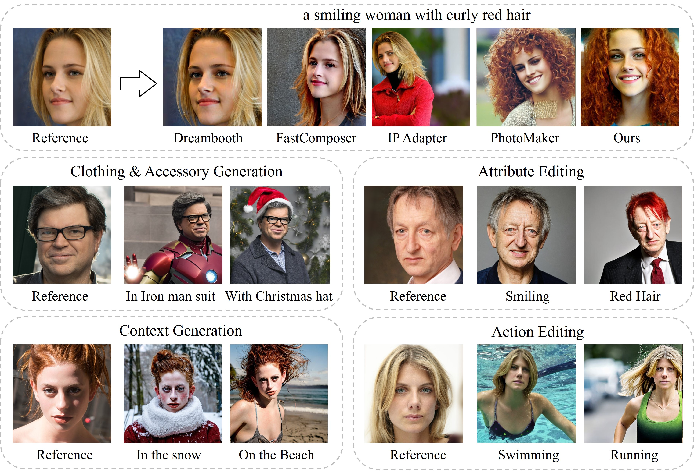

MasterWeaver: Taming Editability and Identity for Personalized Text-to-Image Generation

Text-to-image (T2I) diffusion models have shown significant success in personalized text-to-image generation, which aims to generate novel images with human identities indicated by the reference images. Despite promising identity fidelity has been achieved by several tuning-free methods, they usually suffer from overfitting issues. The learned identity tends to entangle with irrelevant information, resulting in unsatisfied text controllability, especially on faces. In this work, we present MasterWeaver, a test-time tuning-free method designed to generate personalized images with both faithful identity fidelity and flexible editability. Specifically, MasterWeaver adopts an encoder to extract identity features and steers the image generation through additional introduced cross attention. To improve editability while maintaining identity fidelity, we propose an editing direction loss for training, which aligns the editing directions of our MasterWeaver with those of the original T2I model. Additionally, a face-augmented dataset is constructed to facilitate disentangled identity learning, and further improve the editability. Extensive experiments demonstrate that our MasterWeaver can not only generate personalized images with faithful identity, but also exhibit superiority in text controllability.
(a) Training pipeline of our MasterWeaver. To improve the editability while maintaining identity fidelity, we propose an editing direction loss for training. Additionally, we construct a face-augmented dataset to facilitate disentangled identity learning, further improving editability. (b) Framework of our MasterWeaver. It adopts an encoder to extract identity features and employ it with text to steer personalized image generation through cross attention.
By inputting paired text prompts that denote an editing operation, e.g., (a photo of a woman, a photo of a smiling woman), we identify the editing direction in the feature space of diffusion model. Then we align the editing direction of our MasterWeaver with that of original T2I model to improve the text controllability without affecting the identity.
With one single reference image shown on the left, our MasterWeaver can generate high-quality images with flexible editability and faithful identity.

Action & Background Generation
Stylization

Attribute Editing

Accessorization
Apply to Custom Models
@inproceedings{wei2024masterweaver,
title={MasterWeaver: Taming Editability and Face Identity for Personalized Text-to-Image Generation},
author={Yuxiang Wei, Zhilong Ji, Jinfeng Bai, Hongzhi Zhang, Lei Zhang, Wangmeng Zuo},
booktitle={European Conference on Computer Vision},
year={2024}
}
Our project page is borrowed from DreamBooth and PhotoMaker.